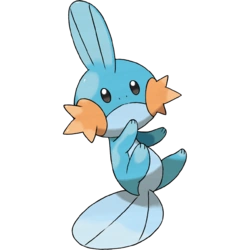

🐟Sabendo mais de Mudkip!
Nome: Mudkip
Espécie: Pokémon Peixe-Lama
Tipo: Água
Habilidades: Torrent (habilidade padrão), Hidratante (habilidade oculta)
Altura média: 0,4 m
Peso médio: 7,6 kg
Idade: Varia conforme o indivíduo
Temperamento: Curioso, brincalhão, leal e enérgico
Habitat ideal: Ambientes próximos à água, com espaço para explorar e descansar
Condição: Saudável, ativo e pronto para criar um vínculo com seu novo treinador
Descrição completa
Conheça o Mudkip, um pequeno e encantador Pokémon do tipo Água, conhecido por sua aparência adorável, inteligência surpreendente e personalidade extremamente companheira. Com sua pele azul, barriga de tom mais claro, nadadeiras fortes e uma grande barbatana alaranjada na cabeça, Mudkip é um animal que chama a atenção por onde passa. Apesar de seu tamanho compacto, esse pequeno Pokémon possui uma força impressionante e uma energia inesgotável. Seu jeito curioso faz com que esteja sempre investigando o ambiente ao redor, brincando com objetos, explorando áreas úmidas e interagindo com as pessoas de quem gosta. Mudkip é especialmente conhecido por sua capacidade de perceber movimentos na água e no solo por meio de sua barbatana craniana sensível. Esse recurso natural permite que identifique alterações ao seu redor, mesmo quando a visibilidade é baixa. Suas nadadeiras também são excelentes para a locomoção aquática, tornando-o um companheiro ideal para atividades próximas a lagos, rios e outras áreas de água doce.

Voltar